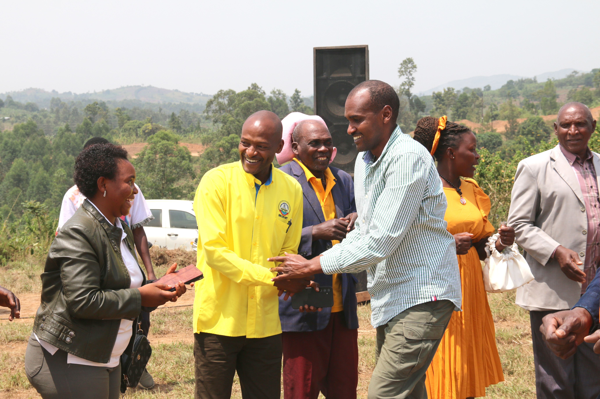
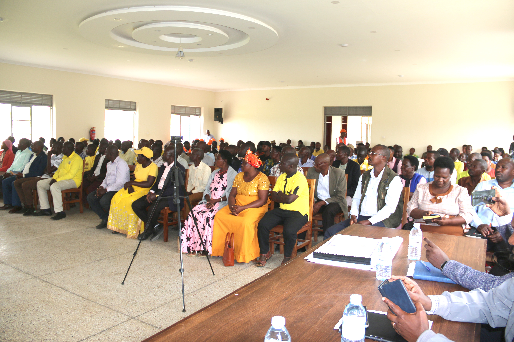
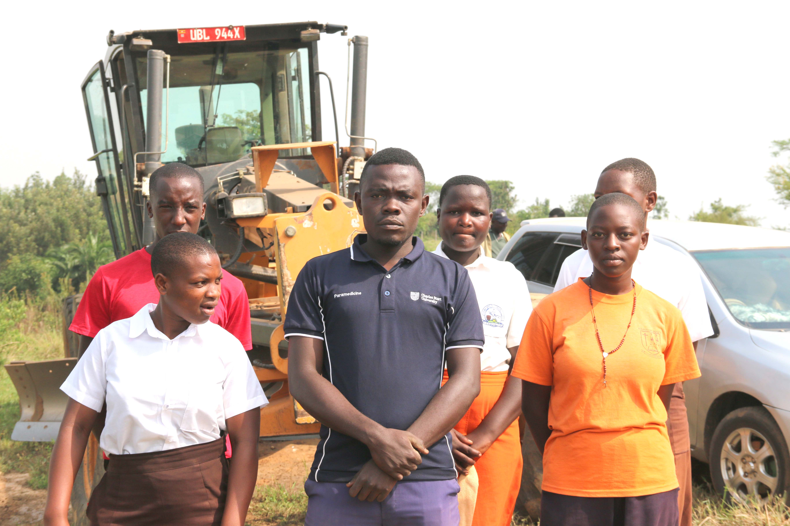

Key Events After Elections

Arrival Event
At his arrival, Hon. Frank Tumwebaze began by greeting fellow leaders, starting with Hon. Joseph Karungi, before engaging with residents and community leaders immediately after the elections.

Lunch with District Leaders
Hon. Frank Tumwebaze, accompanied by Woman MP Hon. Sylvia Bahireira and District LCV Hon. Joseph Karungi

Meeting Residents
Hon. Frank Tumwebaze engaged with residents in Nkoma Subcounty, where people were clearly attentive and actively listening to his message.

Ntonwa Event
Participation of deputy and students at Ntonwa launch program.